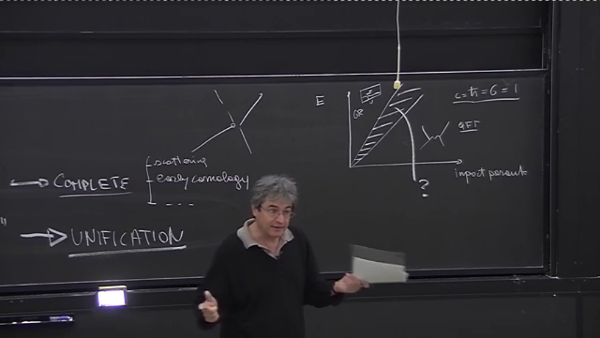

What's RPF and how I got here
Why from an IT perspective
|
Maven project-info (temp) What's RPF and how I got here Why from an IT perspective |
This page recaps very shortly the status quo of contemporary
physics, by commenting this recap video
lecture, by Carlo Rovelli, which provides a high level view of
what happened.
For a detailed view, I'd recommend the
Theoretical
Minimum by Leonard Susskind.
That's the first part of the recap, starting at 5:30: the aim of such "incontrovertible summary" is to provide some arguments for LQG, showing the need (@6:00) for trying to quantize space - sort of final attempt, having run out of options: this will be said later, @ ???, but it's actually due to "having reached max res": see @ ???.
Of course the recap is not about all Physics, but about the "what do
we know about Nature at the elementary levels of Physics" (@6:20).
So, as shown in the page
about cosmic gold mine news, our "current knowledge" is split into
two main theories:
That's our "proven" knowledge (@9:10), "those are the only things we know about the world", while "all the rest is speculation" (@9:30). Please notice "all the rest" means string theory, supersymmetry, etc, including loop quantum gravity itself: that's it (see intro snapshot: @12:00).
Of course, all the above works fine within its domains, but those domains are "uglyly split" (no common ground) and "don't cover it all", meaning that Nature has more to show, than what's in those domains.
Indeed, "we are not happy with the picture there" (@12:15) because "there are open problems" (up to @16:35).
There's two categories of "open problems" (@12:30): from an experimental point of view (i.e. experimental data not fitting with any of the "valid theories") and from a theoretical point of view (i.e. a "meta" point of view):
This (@16:35-@19:40) is an example of why an IT perspective could bring value to the discussion: this section's title should remind IT people about the so-called POJOs. Indeed, it's not just science history that went through the rediscovery of classical Greek philosophy, even IT history got to a point where "plain (good) old java objects" were "a better way to restart from".

What's the problem with "plain old gravitational scattering" (POGS)?
First, it's "two neutral particles" (@16:40) which "interact only
gravitationally", where "neutral" means "carrying no charges"
(electric, color, weak), so I'll add "except gravitational charge",
just to try unify language (syntax) first.
Then I'd be more
prudential in mentioning "bouncing", when it could be just (only)
"scattering" (@16:50), but that's for later.
The real problems come when trying doing predictions for POGS: given there's two different theories (GR and QFT), each one with its own "validity domain" (h=0 for GR, G=0 for QFT), you have to analyze your problem first, to see which of the two theories is "better" at predictions: (@17:15) unfortunately, you have TWO THEORIES AND THREE REGIMES:
In the NML "we have no idea whatsoever of what happens" (@18:40): "there's clearly a hole there" (@18:50), so again there's "incomplete"-ness, and the POGS clearly shows it is both theoretical (no working theory in NML) and experimental (dark matter would likely do gravitational scattering, right? and it will do that only, "right right"?).
So, to summarize the "missing pieces list" (within the "theoretical incompleteness"), it's just POGS (@19:00), for the reasons above, and "early cosmology" (@19:30), because when c=h=G=1 "GR doesn't make any sense anymore" (@19:20), since "it develops singularities" (@19:25), which is bad, as physicians don't like infinite quantities popping up unexpectedly. Let alone a few other details (@19:40) which again fall in the NML.
By the way, I'd simplyfy the previous "GR failing at Planck scale"
argument by saying it's just "our
human/concrete implementation" of the "mathematical/absract
spacetime metrics" that stops working at that scale (c=h=G=1): SR and
GR are continuum mechanics, which means
"a (mathematical) model assuming there's some discrete
material, filling a region of space, which looks continuum at the
scale/precision required by the model".
This shouldn't be
hard to understand: there's no quantum version for GR ("our" metrics)
because GR is "macroscopic by design". It's a dead end, there's no way out, as there's
no way to (physically) implement (mathematical) spacetime metrics at Planck scale.
Repetita juvant (@19:45): "indipendently of the Unification, there is
a question of Completeness", ok, but what about the "combinations" he
lists here? Is the list complete? It's two indipendent boolean
variables, so there's four possible values (of which (0,0) is
negligible) and sixteen
possbile functions to choose from.
He mentioned just 2
special cases, I'm going to add 2 more:
Maybe a better definition for "completeness" (covering both theoretical and experimental sides) could be borrowed from the IT concept of "code coverage", and maybe that would led to something like the incompleteness theorem: you can have three non-unified theories that cover all feasible experiments (and all theoretical regimes) XOR a unified theory which theoretically covers it all, providing a "common ground" to explain the three non-unified theories, but experimentally needs to limit to some Goldilocks conditions.
This segment starts when trying to explain "why c=h=G=1" (@20:50), and simply shows that "our metrics fails at Planck scale", for the same reasons GR did (see @19:25), because of the effects gravitation has on "our implementation of spacetime metrics".
TODOs: